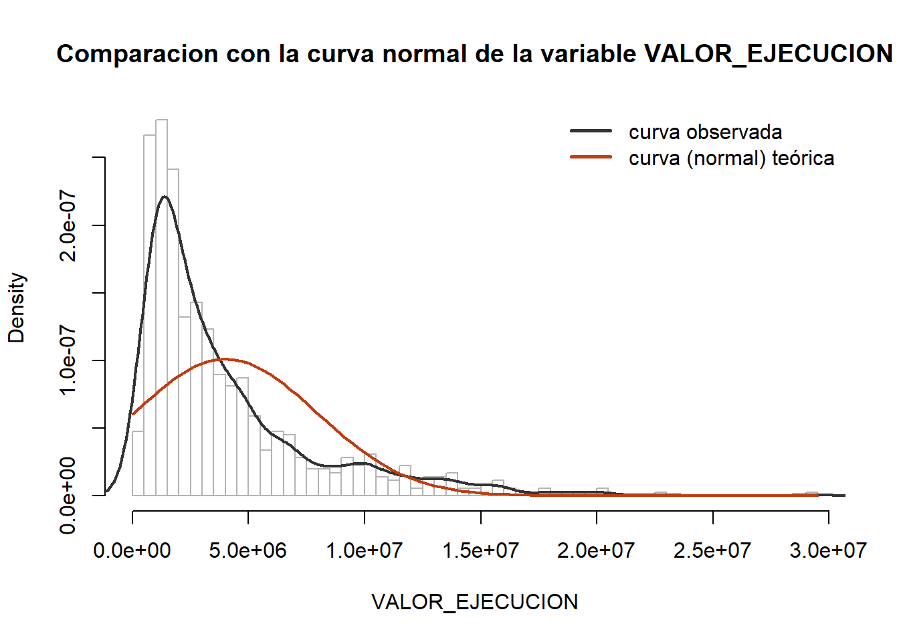
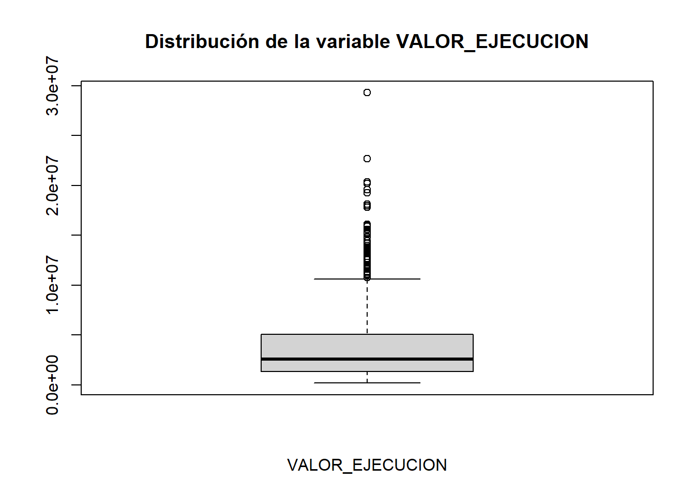
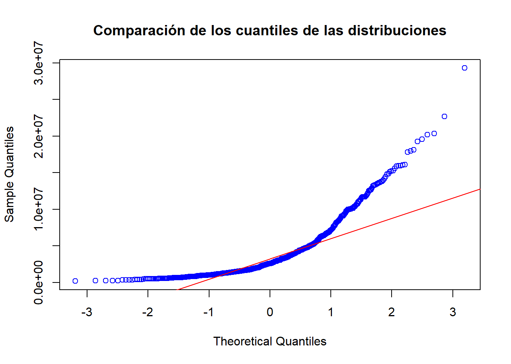

DB <- getDatabaseClean("dataset.xlsx", "data", "VALOR_EJECUCION")RESGISTROS ANTES DE LA LIMPIEZA 779
RESGISTROS LUEGO DE LA LIMPIEZA 713
data <- DB$dataSe toma como referencia la variable VALOR_EJECUCION para ser analizada realizando los respectivos test de normalidas correspondienes del caso
variablePrueba <- data$VALOR_EJECUCIONhist(variablePrueba, freq = F, breaks = 60, col="gray100", border = "gray70", main='Comparacion con la curva normal de la variable VALOR_EJECUCION',xlab = 'VALOR_EJECUCION')
lines(density(variablePrueba), lwd = 2, col="#333333")
curve(dnorm(x, mean(variablePrueba), sd(variablePrueba)), lwd = 2, col = "#bf3e11", add = T)
legend("topright", c("curva observada", "curva (normal) teórica"),
lty = 1.5, lwd = 2.5, col = c("#333333", "#bf3e11"), bty = "n",
cex = 1)
boxplot(variablePrueba, main="Distribución de la variable VALOR_EJECUCION",xlab = 'VALOR_EJECUCION')
qqnorm(variablePrueba, main ='Comparación de los cuantiles de las distribuciones', col = 'blue')
qqline(variablePrueba, col = 'red')
Para este caso se hace uso de la libreria nortest para ayudar a validar la normalidad de los datos registrados en la variable VALOR_EJECUCION
library(nortest)
Pruebasnormalidad<-function(x){
anderson<-ad.test(x)[2][["p.value"]]
# cramer<-cvm.test(x)[2][["p.value"]]
lillies<-lillie.test(x)[2][["p.value"]]
shapiro.francia<-sf.test(x)[2][["p.value"]]
st<-shapiro.test(x)[2][["p.value"]]
table(anderson, lillies, shapiro.francia, st) %>% kbl(
booktabs=TRUE,
align = c("c"),
) %>% kable_styling(
bootstrap_options = c("striped", "hover", "condensed", "responsive")
)
}Pruebasnormalidad(variablePrueba)| anderson | lillies | shapiro.francia | st | Freq |
|---|---|---|---|---|
| 3.7e-24 | 4.41282774738e-57 | 4.4864450965886e-26 | 1.12455779482113e-29 | 1 |
Luego de realizar las pruebas visuales y analiticas se afirma que se rechaza la hipotesis nula \(H_0\) donde se buscaba la normalidad de los datos registrado en la variable VALOR_EJECUADO, por lo que se indica que la variable no corresponde a una distribucion normal.